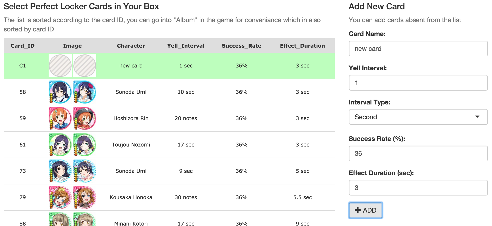
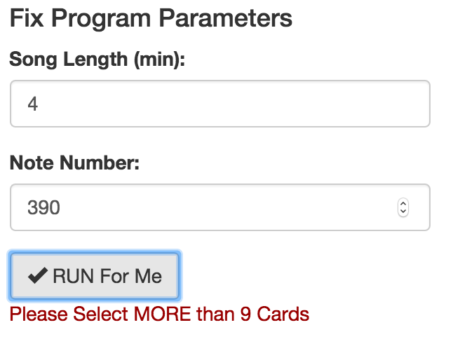
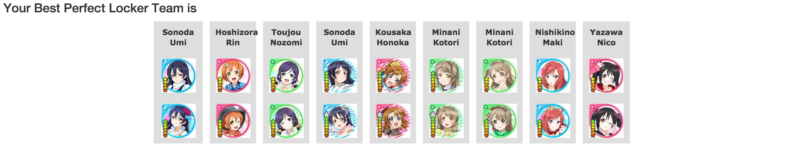
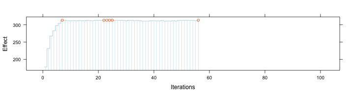

Love Live! School Idol Festival is an popular mobile rytheme game, also part of the Love Live! School Idol Project, a multi-media project including TV animes, musics and lives, so on and also the mobile game. Our Shiny-app is designed as a helper tool for the players of this game.
As common rytheme game, hitting the note too late or early will break the combo, while combo number gives extra bonus in the game. But in Love Live SIF, cards of different characters may have skills which can add effect to the team to loosen the miss criterion. And these cards have such type of skill are called perfect-lockers.
Our shiny-app is aimed to choose from perfect-locker cards having different parameters (yell intervals, success rates and effect durations) the user has, to organize a best team that maximize the overall probability of having the effect during a live.
| Card_ID | Image | Character | Yell_Interval | Success_Rate | Effect_Duration |
|---|---|---|---|---|---|
| 133 | Koizumi Hanayo | 10 sec | 18% | 5 sec | |
| 272 | Hoshizora Rin | 13 sec | 44% | 6 sec |
First, users need to select cards he/she has from the given list. Above is part of the list, which is accually a customed checkboxGroupInput(). The checkboxes are located on the first column in the list before the ID number, and set the hidden using additional javascript. Click (you can try it here) the row will check the coressponding box, which is also defined in the javascript, and render the input via jQuery .trigger("change").

Second, on the right panel users can add cards that are not presented in the list.

Then, the user can fix the parameters, and submit the run. If the user has selected less than 10 cards (sence the team is a collection of 9 cards), the app will warn the user the add more cards.
After submitting the form, the server will run for a while and return the best collection of cards.
Using shiny's withProgress(), the app can tell the running progress of the program.

To find the best collection, the program need to optimize some effect value. In this case the value is defined as
\[Effect = \sum_{time:\ T}{Pr(on\ perfect\ locking\ condition,\ time = T)}\]
And the probability for the state for time T is
\[Pr(on\ condition,\ time = T) = 1 - \sum_{card:\ i}{1 - Pr(card = i,\ time = t,\ success)}\]
This shiny app utilized the Gibbs sampler method to generate the optimized result, which could avoid local optimum for some extend.
Firstly the sampler will generate a random 9-card list from selected. For each iteration, the sampler discard one card from the current list randomly according to the contribution of that card to the effect. \[Contribution_{card:\ i} = Effect_{current\ 9-card\ team} - Effect_{-card:\ i}\] \[Pr_{discard,\ card:\ i} \propto max(Contribution) - Contribution_{card:\ i}\] And then from the candidate list (including the just-discarded card), the sampler select one card randomly to insert back to the list, also, according to the contribution of each card. \[Contribution_{card:\ i} = Effect_{+card:\ i} - Effect_{current\ 8-card\ team}\] \[Pr_{insert,\ card:\ i} \propto Contribution_{card:\ i} - min(Contribution)\]
After certain number of iteration, or after the maximum effect has occurs for a certain time, the iteration stops, and the collection of cards that generates the maximum effect will be reported. The recorded effect during running may looks like:  In the figure, red dots are max recorded effects. In this case the program has maxium recorded effect more than threshold 5 times, so the iteration breaks at middle.